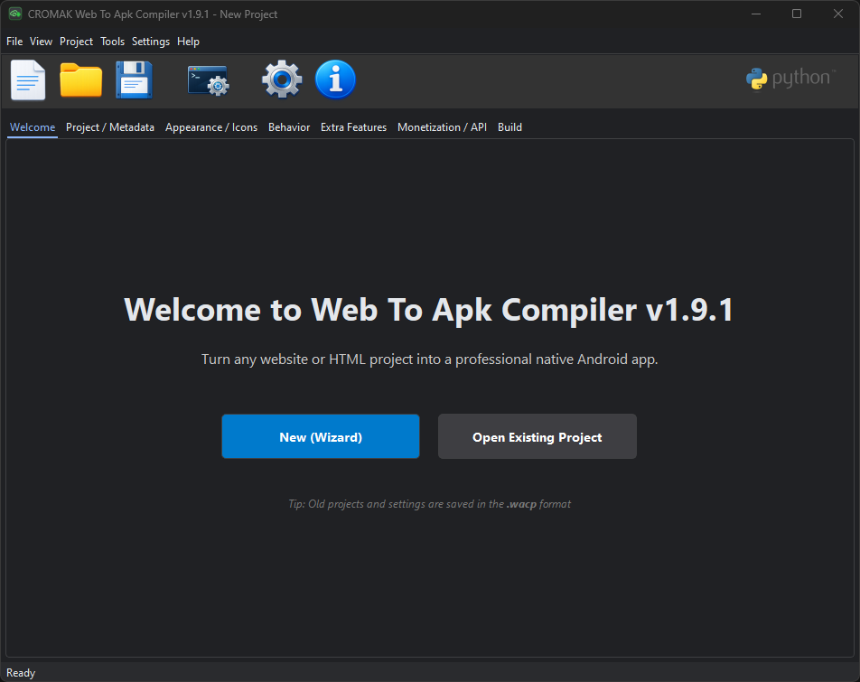
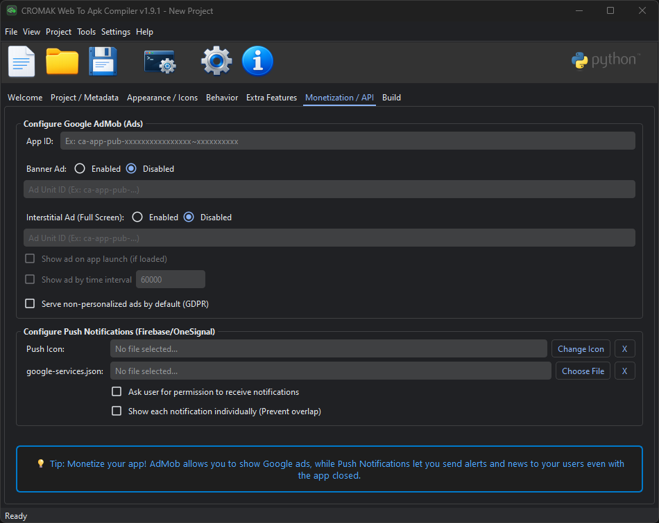
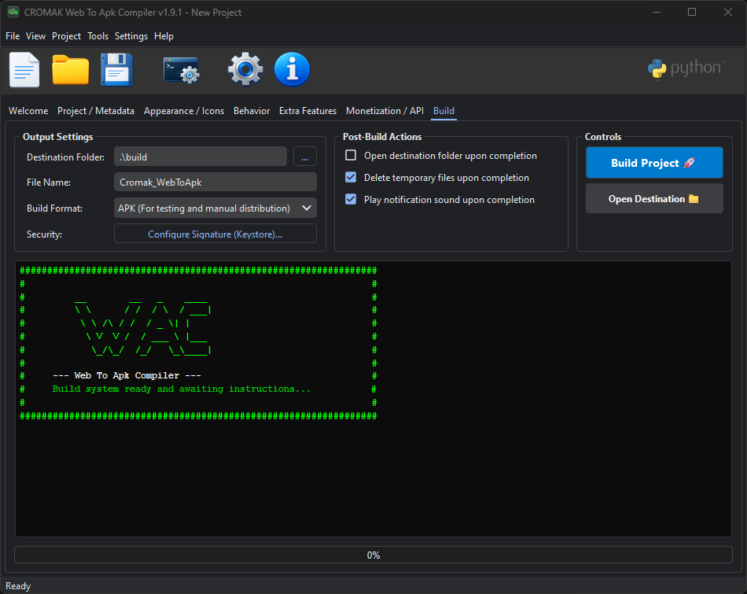

Cromak Web To Apk Compiler 2.0
Transforme Sites e Sistemas Web em Aplicativos Nativos sem Tocar no Android Studio.

Engenharia Web-to-Native
-
UI Nativas Injetáveis
Crie Splash Screens imersivas e Menus Laterais (Navigation Drawers) nativos diretamente pela interface visual, sem precisar escrever uma única linha de Java ou Kotlin.
-
Alta Performance de Renderização
Motor com suporte a Aceleração de Hardware (GPU), Cache Inteligente de páginas offline e manipulação avançada de permissões do sistema Android.
-
Monetização Integrada
Aba exclusiva para injeção de IDs de anúncios (AdMob) e integração com APIs de Notificações Push (OneSignal, Firebase), deixando o seu app pronto para gerar receita.
-
Console de Compilação Autônomo
Esqueça instalações pesadas de gigabytes do Android SDK. Nosso compilador standalone processa, assina e gera o APK final diretamente na sua máquina de forma rápida e visual.

Construtor visual para Menus de Navegação
Controle Absoluto de Build



Especificações do Compilador
| Saída Padrão | Arquivo .APK (Android Application Package) pronto para distribuição. |
| Tipo de Projetos Suportados | URLs Remotas (SaaS, Lojas, Blogs) ou Arquivos HTML locais (Offline). |
| Assinatura de App (Keystore) | Integrado nativamente ao processo final de compilação. |
| Requisitos do Sistema (PC) | Windows 10 ou 11 (x64). Nenhuma dependência externa necessária. |